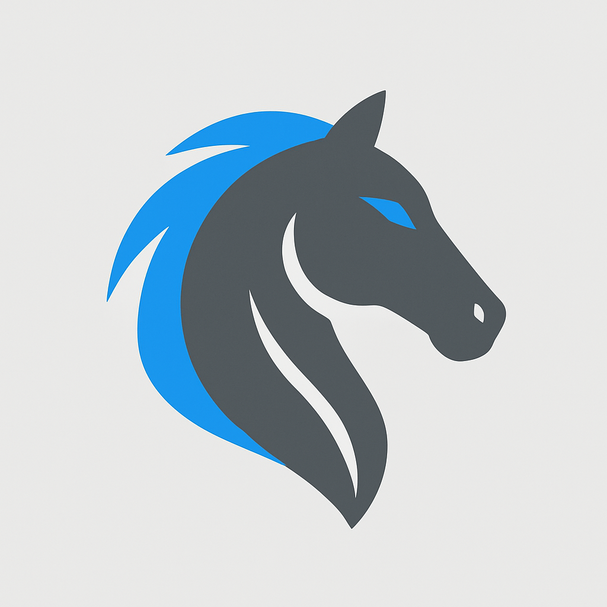

<!DOCTYPE html>
<html lang="es">
<head>
  <meta charset="UTF-8" />
  <meta name="viewport" content="width=device-width, initial-scale=1.0" />
  <title>Code by Suarez — Portafolio</title>
  <meta name="description" content="Portafolio de Juan Suarez — Desarrollo Web Frontend y soluciones digitales." />
  <meta property="og:title" content="Code by Suarez — Portafolio" />
  <meta property="og:description" content="Desarrollo Web Frontend y soluciones digitales." />
  <meta property="og:type" content="website" />
  <link rel="stylesheet" href="style.css" />
  <link rel="icon" type="image/png" href="imagenes/favicon.png" />
</head>

  <!-- Capa para destellos del cursor -->
  <div id="cursor-sparkles" aria-hidden="true"></div>

  <script>
    // ===== Cursor Sparkles (pool-based, motion-safe) =====
    (function () {
      const reduce = window.matchMedia('(prefers-reduced-motion: reduce)').matches;
      if (reduce) return; // Respeta usuarios con reducción de movimiento

      const LAYER = document.getElementById('cursor-sparkles');
      const POOL_SIZE = 28;              // ajusta cantidad máxima en pantalla
      const SPARKLES = [];
      let i = 0;
      let enabled = true;

      // Desactiva en touch para evitar gasto innecesario
      window.addEventListener('touchstart', () => enabled = false, { once: true });

      // Crea el pool
      for (let k = 0; k < POOL_SIZE; k++) {
        const el = document.createElement('div');
        el.className = 'sparkle';
        LAYER.appendChild(el);
        SPARKLES.push(el);
      }

      // Reutiliza un sparkle del pool
      function place(x, y) {
        const s = SPARKLES[i];
        i = (i + 1) % POOL_SIZE;

        // reset estado
        s.style.left = x + 'px';
        s.style.top  = y + 'px';
        s.style.opacity = '1';
        s.style.transform = `translate(-50%,-50%) rotate(${(Math.random()*360)|0}deg) scale(${0.9 + Math.random()*0.6})`;

        // fuerza reflow y dispara fade
        // (trick para que el transition ocurra)
        s.offsetHeight; 
        s.classList.remove('fade');
        requestAnimationFrame(() => s.classList.add('fade'));
      }

      window.addEventListener('mousemove', (e) => {
        if (!enabled) return;
        place(e.clientX, e.clientY);
      }, { passive: true });
    })();
  </script>
</body>
</html>

<body>
  <header class="site-header">
    <nav class="nav container">
      <a href="#home" class="brand">
        
        <span class="brand-text">Code by Suarez</span>
      </a>
      <ul class="nav-links">
        <li><a href="#projects">Proyectos</a></li>
        <li><a href="#about">Sobre mí</a></li>
        <li><a href="#skills">Habilidades</a></li>
        <li><a href="#contact">Contacto</a></li>
      </ul>
    </nav>
  </header>

  <main id="home">
    <section class="hero container">
      <div class="hero-text">
        <h1>Desarrollo web claro, rápido y con enfoque humano.</h1>
        <p>
          Soy Juan Suarez, estudiante de Ingeniería de Sistemas en Colombia. Actualmente curso formación como
          <strong>Full Stack / Frontend Developer</strong>. Busco trabajo <strong>remoto</strong> y de
          <strong>medio tiempo</strong> mientras continúo mis estudios. Tengo toda la disposición para aprender
          nuevas habilidades y aportar valor real.
        </p>
        <div class="badge-row">
          <span class="badge">Remoto</span>
          <span class="badge">Medio tiempo</span>
          <span class="badge">Disponible</span>
        </div>
        <div class="cta-group">
          <a class="btn primary" href="#projects">Ver proyectos</a>
          <a class="btn ghost" href="mailto:codebysuarez@gmail.com">Escríbeme</a>
        </div>
      </div>
    </section>

    <section id="projects" class="section container">
      <h2>Proyectos</h2>
      <p class="section-subtitle">Una selección breve. Iré publicando más a medida que avance.</p>
      <div class="grid">
        <!-- Proyecto 1 (placeholder editable) -->
        <article class="card">
          <div class="card-tag">Landing</div>
          <h3>Eurosil Katsil — Brochure Web</h3>
          <p>Versión web del brochure comercial (arena para gato). Layout limpio, foco en performance y mensajes de valor.</p>
          <div class="card-actions">
            <a href="#" target="_blank" rel="noopener">Demo</a>
            <a href="#" target="_blank" rel="noopener">Repositorio</a>
          </div>
        </article>
        <!-- Proyecto 2 (placeholder editable) -->
        <article class="card">
          <div class="card-tag">Frontend</div>
          <h3>Portafolio Code by Suarez</h3>
          <p>Sitio personal con secciones de proyectos, habilidades y contacto. Diseño responsivo y accesible.</p>
          <div class="card-actions">
            <a href="#" target="_blank" rel="noopener">Demo</a>
            <a href="#" target="_blank" rel="noopener">Repositorio</a>
          </div>
        </article>
        <!-- Proyecto 3 (placeholder editable) -->
        <article class="card">
          <div class="card-tag">API</div>
          <h3>Weather App</h3>
          <p>Consulta del clima por ciudad con una API pública. Manejo de estados de carga y errores.</p>
          <div class="card-actions">
            <a href="#" target="_blank" rel="noopener">Demo</a>
            <a href="#" target="_blank" rel="noopener">Repositorio</a>
          </div>
        </article>
      </div>
    </section>

    <section id="about" class="section container">
      <h2>Sobre mí</h2>
      <p>
        Estudiante de Ingeniería de Sistemas con enfoque en <strong>desarrollo web</strong> y bases sólidas en
        programación. He realizado trabajos independientes (brochure comercial y páginas web para pequeñas empresas).
        También tengo formación en <strong>ciencia de datos</strong> a nivel universitario.
      </p>
      <ul class="about-list">
        <li>🎓 Ingeniería de Sistemas — PUJ (en curso)</li>
        <li>📚 Estudiando Full Stack / Frontend Developer</li>
        <li>🌐 Remoto — Colombia (UTC−5)</li>
        <li>🕒 Disponibilidad: medio tiempo</li>
      </ul>
    </section>

    <section id="skills" class="section container">
      <h2>Habilidades</h2>
      <div class="grid skills-grid">
        <div class="skill">
          <h4>Frontend</h4>
          <p>HTML · CSS (Flexbox/Grid) · Responsive · Accesibilidad</p>
        </div>
        <div class="skill">
          <h4>Lenguajes</h4>
          <p>C++ · Java · SQL · Python · JavaScript (en progreso)</p>
        </div>
        <div class="skill">
          <h4>Data / Universidad</h4>
          <p>Fundamentos de ciencia de datos · Limpieza y análisis básico</p>
        </div>
        <div class="skill">
          <h4>Herramientas</h4>
          <p>Git · GitHub · Figma · Canva</p>
        </div>
        <div class="skill">
          <h4>Soft Skills</h4>
          <p>Aprendizaje continuo · Comunicación · Trabajo en equipo · Resolución de problemas</p>
        </div>
      </div>
    </section>

    <section id="contact" class="section container">
      <h2>Contacto</h2>
      <p>¿Tienes un proyecto? Conversemos.</p>
      <div class="contact-links">
        <a class="btn primary" href="mailto:codebysuarez@gmail.com">codebysuarez@gmail.com</a>
        <a class="btn ghost" href="https://linkedin.com/in/juansuarez" target="_blank" rel="noopener">LinkedIn</a>
        <a class="btn ghost" href="https://github.com/codebysuarez" target="_blank" rel="noopener">GitHub</a>
      </div>
    </section>
  </main>

  <footer class="site-footer">
    <div class="container footer-inner">
      <span>© 2025 Code by Suarez</span>
      <a href="#home">Volver arriba ↑</a>
    </div>
  </footer>
</body>
</html>
